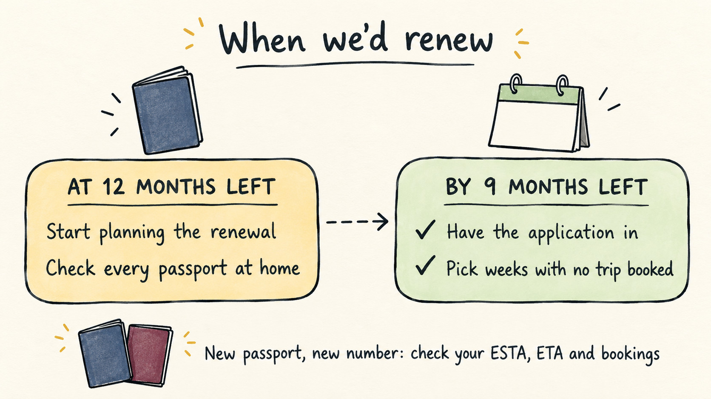

Can You Renew a Passport Before It Expires?
Travel Document Vault
Key Takeaways
- Yes, you can renew early. HM Passport Office and USAGov set no waiting period, and Canada only asks for a reason if you apply more than a year ahead.
- In the UK, renewing early means giving back the months you have left. They haven't been added to new passports since October 2018.
- Your old passport is cancelled once the new one is authorised, and on Canada's online route, as soon as you apply.
- The new passport has a new number, so a US ESTA, a UK ETA and any bookings tied to the old one need checking, and a visa in the old passport means carrying both.
- Our view: start planning at 12 months, apply by nine, in a stretch of weeks with no trip booked.
Yes, and you don't need a special reason. A passport can be renewed while it still has a year or more on it, and the people who renew early rarely wish they'd waited. What's worth knowing first is what changes once you do. You hand back any unused months, your old passport stops working from a set point rather than when the new one arrives, and a new number follows you into every booking and travel permit.
None of that is a reason to hold off. It's a reason to choose a quiet few weeks with no trip booked, which is what most of this guide is about.
There's no official waiting period before you can renew
HM Passport Office ties renewal to two triggers: your passport has expired, or it doesn't have enough time left for where you're going. Its renewal guidance sets no earliest date, and it says that how much time you need depends on the country you're visiting. USAGov goes a step further and tells Americans to renew early, because processing times vary and some countries and airlines refuse entry when a passport has less than six months left.
Canada draws a line, and even that one is soft. The Government of Canada says that if you apply more than a year before your passport expires, it will ask why, and a postal application needs a written explanation. Its online renewal service is narrower still, open only when your passport expires within the next six months or has already expired.
If you're American, there's a limit worth knowing at the other end: USAGov says you can't renew a passport that was issued more than 15 years ago, or one issued before your 16th birthday. Leave an old passport in a drawer long enough and renewal is off the table.
Renewing early in the UK means giving back the months you have left
This is the real cost of renewing early, and it's smaller than it sounds. HM Passport Office's historic guidance explains that between November 2004 and October 2018, anyone renewing before expiry could have up to nine unused months added to the new passport. Since October 2018 that no longer happens, so the old passport's remaining time simply goes.
Apply nine months early, then, and you trade those nine months for a passport you won't need to think about for a decade. We'd take that trade every time, because the alternative is renewing against the clock with a trip already on the calendar.
The old extra-months rule left one catch behind. GOV.UK's travel advice for Spain warns that a passport renewed before October 2018 might have a date of issue more than ten years ago.
That matters because the EU's Your Europe guidance says a passport used to enter the Schengen area must have been issued within the last ten years. It also has to stay valid for at least three months after you leave. A passport that looks fine by its expiry date can still fall short in Europe. If yours was issued under the old rule, check the issue date as well as the expiry date, and our guide to how long a passport is valid for travel walks through both.
Your old passport stops working once the new one is authorised
Renewal isn't a swap that waits for the new passport to land on your doormat. In the UK the old passport goes in with your application, and HM Passport Office's caseworker guidance tells staff to cancel it when they authorise the new one. Canada's online route moves faster still. The Government of Canada says your current passport is cancelled and stops being valid as soon as you apply, and it tells anyone travelling in the next 20 business days not to apply online.
That's the practical case for renewing between trips rather than around one. Whether you can travel at all while a renewal is in progress depends on the country and the route. We go through it country by country in our guide to travelling while your passport is being renewed.
Visas are the exception worth planning for. If your old UK passport holds a visa that hasn't expired, GOV.UK says to send the passport with the visa attached and it will be returned to you. USAGov says Americans get their most recent passport back in a separate envelope, usually about four weeks after the new one arrives. Canada asks you to say on the form that you need the visa and want the original back, and warns that otherwise the visa could be damaged when the old passport is cancelled.
A new passport number changes more than the booklet
Every renewal comes with a new number. HM Passport Office pairs that fact with its most useful piece of advice: don't book travel until you have a valid passport, because the new one won't carry the same number as the old. The Government of Canada says much the same, recommending that you don't finalise travel plans until the passport arrives.
Anything already linked to the old number deserves a look before your next trip:
- A US ESTA has to be applied for again. US Customs and Border Protection says a new ESTA is required when the traveller is issued a new passport.
- GOV.UK says a UK ETA is linked to the passport you applied with and lasts two years or until that passport expires, whichever is sooner. Check where yours stands before flying on the new one, and our guide to which passport a UK ETA is tied to covers the details.
- For a visa in the old passport, the usual answer is to carry both. CBP says a US visa in an expired passport can still be used alongside the new one, with no need to reapply unless the visa itself has expired. GOV.UK gives British travellers the same advice for other countries' visas, though Russia has different rules.
- Flights and hotels booked with your old passport details may need the new number added, an easy job at home and an awkward one at a check-in desk.
Renew in a quiet stretch with no trip booked
Our view is simple: start thinking about renewal when a passport drops to 12 months, and have the application in by nine. That isn't an official rule. It leaves room to spare if the application runs slow, a destination asks for more validity than you expected, or a trip comes up at short notice, all without paying extra for a faster service.

The other half is choosing when inside that window. Look for a few weeks with nothing booked, since the old passport goes in with the application and the new one comes back with a different number.
HM Passport Office says you'll usually get a passport within three weeks, longer if it needs more information or an interview, with the clock starting when it receives your documents. In Canada the published standard is 10 or 20 business days depending on where you apply, plus postage. For what tends to slow an application down, our guide to how long passport renewal takes has the detail.
Travel Document Vault keeps each passport's expiry date on your phone and, by default, starts reminding you eight months before it runs out, inside the window we'd aim for. Download on the App Store and Google Play.
If a family trip is on the horizon, line up every passport in the household at the same time. In the UK, HM Passport Office issues child passports for five years rather than ten, so the one that needs renewing first often isn't the one you'd expect. If anyone is heading somewhere that asks for extra validity on arrival, check our guide to the 6-month passport rule for how that shifts your date.
Before you rely on this: it's a blog, not an official source. Rules and details change, and your situation may be different. We check what we publish, and we can still be wrong or out of date. If something here matters to your plans, confirm it with the authority that handles it before you act.
Frequently Asked Questions
Can you renew a passport before it expires?
Yes. HM Passport Office and USAGov set no minimum waiting period, and USAGov tells Americans to renew early. Canada will ask for your reason if you apply more than a year before expiry, and its online renewal is only open within six months of expiry.
Do you lose the remaining months if you renew a UK passport early?
Yes. HM Passport Office guidance says unused validity of up to nine months was added to renewed passports between November 2004 and October 2018, but it hasn't been added since. Renew nine months early and those nine months go.
Can I still use my old passport after applying to renew?
Plan as though you can't. HM Passport Office cancels the old passport when it authorises the new one, and Canada's online route cancels it as soon as you apply. If the old passport holds a valid visa, it can be returned to you so you can travel with both.
Do I need a new ESTA or UK ETA after renewing my passport?
For a US ESTA, yes: US Customs and Border Protection says a new ESTA is required when you're issued a new passport. A UK ETA is linked to the passport you applied with and lasts until that passport expires at the latest, so check the GOV.UK guidance before travelling on the new one.
When is the best time to renew a passport?
We'd start planning at 12 months of validity left and apply by nine, in a stretch with no trip booked. HM Passport Office and the Government of Canada both advise against booking or finalising travel until the new passport arrives.